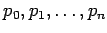
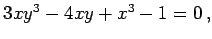
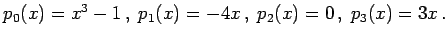
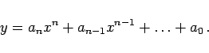
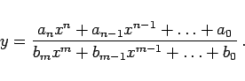
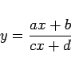
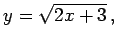
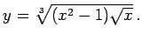

Algebraische Funktionen zeichnen sich durch eine Verknüpfung des Arguments x mit der Funktion y über eine algebraische Gleichung der Form
aus, wobei  Polynome in x sind.
| Beispiel |
|
 d.h.  |
Wenn es gelingt, eine algebraische Gleichung algebraisch nach y aufzulösen, dann liegt einer der folgenden Typen der einfachsten algebraischen Funktionen vor:
|  | (2.37) |
Insbesondere bezeichnet man y=a als Konstante, y=ax+b als lineare Funktion
und y=ax2+bx+c als quadratische Funktion.
|  | (2.38a) |
Insbesondere bezeichnet man
|  | (2.38b) |
als gebrochenlineare Funktion.
| Beispiel A |
|
 |
| Beispiel B |
|
 |